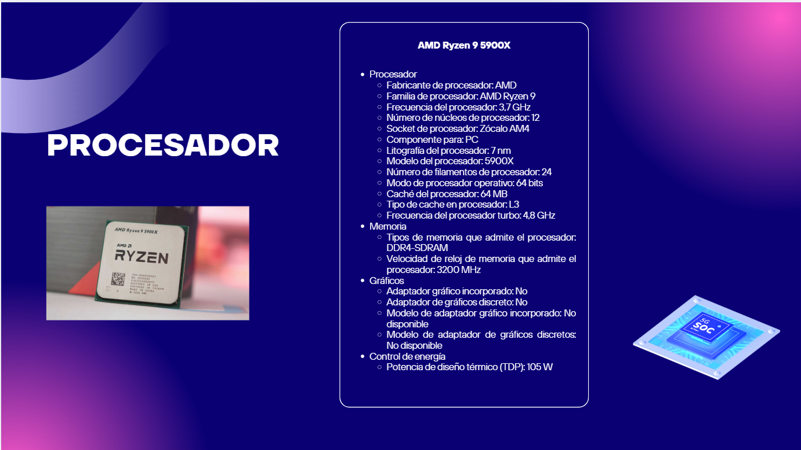
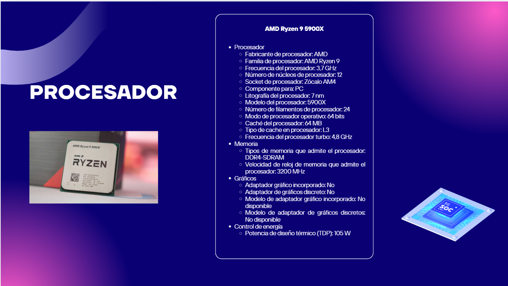
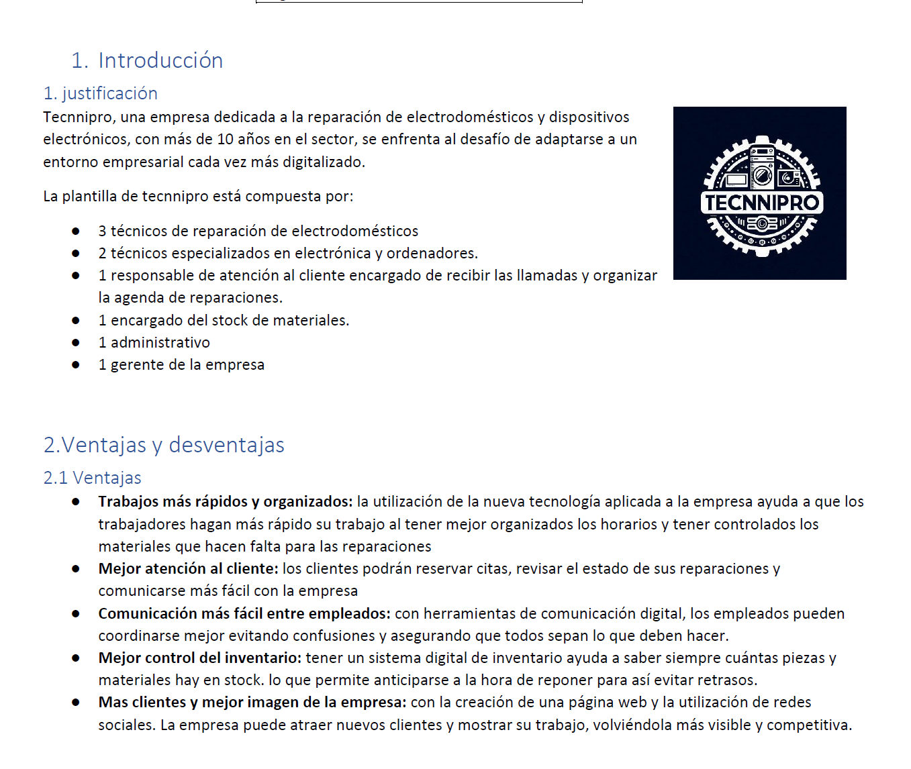

Introducción
El Grado Superior en Administración de Sistemas Informáticos en Red (ASIR) está diseñado para formar profesionales en la configuración, administración y mantenimiento de sistemas informáticos y redes. A continuación, se detallan los módulos que componen esta formación.
Módulos 1º ASIR
-
Implantación de Sistemas Operativos:
Profundiza en la instalación, actualización y recuperación de sistemas operativos diferentes.


-
Planificación y Administración de Redes:
diseño, implementación y mantenimiento de redes informáticas.

-
Gestión de Bases de Datos:
modelos entidad relacion, creación y consultas de base de datos.

-
Lenguaje de Marcas:
Uso de lenguajes de marcas como HTML y CSS para el desarrollo de sitios web. He aprendido a estructurar contenido web y aplicar estilos. ademas del uso de XML y su validación con DTD y XSD.

-
Fundamentos de Hardware:
Conocimientos básicos sobre componentes de hardware y su integración en sistemas.
 

-
Itinerario Personal para la Empleabilidad (IPE):
Capacitación en derechos laborales, prevención de riesgos y búsqueda de empleo.
-
Digitalización:
he aprendido sobre la transformación digital en las organizaciones y cómo la tecnología impacta en los procesos empresariales. Se abordan conceptos clave como la digitalización de documentos, la automatización de procesos y el uso de herramientas digitales para mejorar la eficiencia operativa.
además, este curso estamos haciendo un proyecto en el que digitalizamos una pequeña empresa. en mi caso un servicio tecnico
 -
Sostenibilidad:
He aprendido sobre los principios de sostenibilidad aplicados a la tecnología y la gestión de sistemas informáticos. Esto incluye la importancia de minimizar el impacto ambiental en el uso de recursos tecnológicos, así como la implementación de prácticas sostenibles en el desarrollo y mantenimiento de infraestructuras. También he abordado temas como la eficiencia energética, la gestión de residuos electrónicos y el fomento de una cultura organizacional sostenible.
Contacto
Si tienes alguna consulta, no dudes en enviarme un correo a francisco.cuesta.1998@gmail.com.